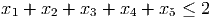
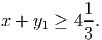
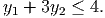

-complete. (No partial credit. 4 points per part, -1 point for incorrect
answers.)
-complete. (No partial credit. 4 points per part, -1 point for incorrect
answers.)
- Node packing with lower bound: Given a graph G = (V,E) and an integer k, does
there exist a node packing of cardinality at least k?
Polynomially solvable
-complete - Perfect matching: Given a graph G = (V,E), does there exist a perfect matching?
Polynomially solvable
-complete - Minimum spanning tree with upper bound Given a graph G = (V,E), edge weights we for
e ∈ E, and an integer W, does there exist a spanning tree with total weight no larger
than W?
Polynomially solvable
-complete - Traveling salesman problem with upper bound: Given a complete graph on vertices V ,
with integer edge weights we, and a positive integer W, does there exist a traveling
salesman tour of length no more than W?
Polynomially solvable
-complete - Binary knapsack problem with lower bound: Given a ∈ ℤn, c ∈ ℤn, and scalars b and z,
does there exist a binary x ∈ ℤn with aT x ≤ b and cT x ≥ z?
Polynomially solvable
-complete
- (4 points) Show the constraints

have Chvatal rank equal to one.
- (8 points) Show the valid constraint

has Chvatal rank no greater than 3.
- (8 points) Show the valid constraint
 has Chvatal rank at least 2.
- (10 points) Give the next level of the branch-and-bound tree using standard
branch-and-bound. You need only give the optimal value at each node, together with
the fathoming decision. Note that in an optimal solution to a relaxation, all the
variables that take non binary values take the same value.

- (10 points) Give the tree you obtain if you use orbital branching. How many LP subproblems do you solve?

- (8 points) The nonnegative integer variable y1 and the nonnegative continuous variable
x must satisfy
 Give a valid linear constraint that is violated by the point x = 0, y = 4.
- (12 points) Let y2 be a binary variable. Assume in addition that y1 and y2 must
satisfy
 Lift the constraint you found in part 4a to give a valid constraint in x, y1, and y2.

Every feasible solution satisfies the n + 1 degree constraints
You may assume these equality constraints are linearly independent. (Hint: Let M be a square matrix with every entry equal to one. Let I be the identity matrix. You may assume that the columns of the matrix M - I are linearly independent.)
- (4 points) How many feasible solutions are there?
- (8 points) Show that the dimension of the feasible region is n - 1.
- (8 points) Show that the constraints xe ≤ 1 define facets of conv(S) for the edges (1, 2), (2, 3), …, (n - 1,n), (1,n).